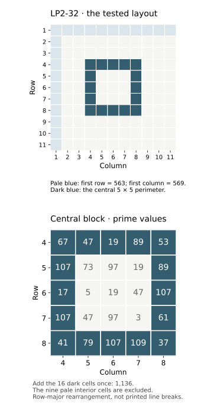

Wing and Tree: LP2-27–32
Research dossier for LP2-27–32: illustrated pages, source comparisons, grid sums, period-13 tests, experiment bounds and open questions.
On this page
“Wing & Tree” is the community name for LP2-27–32. The group begins with a detached, veined wing above the text on LP2-27 and ends with a soft-edged tree-shaped drawing below the text on LP2-32. Looking at the two endpoints makes the browsing name much easier to understand.
Section at a glance
LP2-27–32 comprises six unsolved pages in the current archive. “Wing and Tree” names its illustrated endpoints; it is not a recovered chapter title or proof that all six pages use one key. Start with the page records below, then compare the documented tests with the exact operation you want to try.
| Page | Archived runes | Prime sum | Locate |
|---|---|---|---|
| LP2-27 | 234 | 12093 | Wing above the text |
| LP2-28 | 269 | 14161 | First intervening page |
| LP2-29 | 277 | 14009 | Intervening text |
| LP2-30 | 263 | 14443 | Intervening text |
| LP2-31 | 269 | 13680 | Page used in the period-13 IoC studies |
| LP2-32 | 121 | 6045 | Tree below the text |
Counts include every recognized alphabet rune in the archived text, including headings, and exclude punctuation and other characters. Prime sums use the stored Gematria Primus values. None of these six page records currently has a separate reviewed-text layer; that is a statement about published review coverage, not a claim that their transcriptions are wrong.
The illustrated endpoints


The wing has a dark outer boundary and a network of internal lines. The tree-shaped drawing has a dark central trunk-like form and branching extensions, with much softer edges. The tree’s photographic source is discussed below; the wing’s source and any intended mathematical structure remain separate questions.
The pages between them
LP2-28–31 carry the intervening runic text. Keep these pages in view when proposing a section-wide operation: a rule that uses only the illustrated endpoints still needs to explain how it applies to the middle.


Reading the middle pages as images
Each of LP2-28, LP2-29, LP2-30 and LP2-31 has twelve rows of black runes in a central block with broad blank margins. None of these four sheets has the detached wing or tree drawing found at the endpoints, an illustrated border, or a visible red heading. Small single dots and compact punctuation clusters remain part of their visual layout.
For specific details, inspect the dot at the start of LP2-28’s fourth row, clusters in LP2-29’s third and fourth rows, the opening dot on LP2-30’s final row, and clusters in LP2-31’s first two rows. Each observation links to a rectangle in the original image.
Row boundaries, punctuation and rune counts answer different questions. The index-of-coincidence example uses LP2-31’s 269 runes, excluding punctuation. The repeated-sequence guide likewise explains its rune-only stream. Those exclusions define the calculations; they do not establish that the excluded marks are meaningless. For a layout-based test, preserve their positions and state whether a sequence continues across a row or page break.
Two different kinds of branching
The wing’s internal lines form enclosed areas; the tree-shaped drawing suggests a central form with extensions. A graph can represent either tracing, but the decision about vertices and edges must be explicit. A junction, a crossing, and a closed cell are different features.
The branches and trees article defines tips, junctions, and segments as separate possible measurements. For the wing, a cell count would be another measurement: state whether the outer boundary closes a region and how faint or interrupted lines are handled. Counting a picture without those rules is difficult to reproduce.
Inspecting the soft-edged drawing
Use the original LP2-32 JPEG to inspect the tree-shaped figure. Enlarging it changes display size; it does not recover additional detail. Sharpening or thresholding can change apparent branch boundaries, so any transformed image should be shown alongside the original and identified as a derivative.

If testing a proposed source image, retain the source’s provenance and show the alignment. If measuring the manuscript alone, record the crop rectangle and test whether modest threshold changes alter the count. The image-region guide explains how to preserve those decisions.
The photograph behind the tree
Compare LP2-32 with the Earls Barton photograph on Wikimedia Commons, horizontally reflected and processed in the manuscript. The shared-tree comparison brings together LP2-32, LP2-55 and the 2016 message. The original photograph’s ground, fine twigs and bark texture are reduced in the manuscript treatments. Reconstructing the exact processing sequence is still an open task.
For the preserved message file, its OutGuess payload and signature checks, see the 2016 and 2017 messages. For the numerical connection, continue to the 11×11 grid calculation.
Connecting a visual proposal to a cipher test
A test needs more than a plausible resemblance between wing veins and branches. Specify the ordered values or operation extracted from the drawing, the pages it applies to, and any reset or reading-direction rule. Record those choices before examining candidate plaintext. See documenting a reproducible attempt.
This article does not report a successful decoding or a completed geometric test. The published grid experiment below tests numerical correspondences; it does not test a branch-derived cipher.
LP2-32 grid correspondence
The 11×11 grid experiment reproduces a first-row sum of 563, first-column sum of 569 and central 5×5 perimeter sum of 1136. These equal the 2016 carrier’s width, height and extracted payload length. The record specifies every cell and the rearrangement; it does not establish intent or statistical significance.

How often do eleven-rune sums reach 563 or 569?
The registered window-census experiment provides the complete scope, independent checker and a self-contained download. The grid correspondence raises a useful follow-up: do these totals occur elsewhere in the section? A window is a fixed-length piece of the rune stream. Here, take the first eleven runes, add their Gematria Primus prime values, move forward by one rune, and repeat. This counts every possible starting position rather than reporting only the positions that match.
The census retains every alphabet rune, including headings, and removes punctuation and spaces. Each page starts a fresh stream. Windows may cross printed lines and word boundaries, but never page boundaries. There is no reversal, padding or wrap from the end back to the start. A page with N runes therefore contributes N − 10 windows.
| Page | Runes | Windows | Sum 563 | Sum 569 |
|---|---|---|---|---|
| LP2-27 | 234 | 224 | 0 | 2 |
| LP2-28 | 269 | 259 | 2 | 2 |
| LP2-29 | 277 | 267 | 1 | 2 |
| LP2-30 | 263 | 253 | 0 | 1 |
| LP2-31 | 269 | 259 | 3 | 3 |
| LP2-32 | 121 | 111 | 1 | 0 |
| Total | 1,433 | 1,373 | 7 | 10 |
The mean sum across these 1,373 windows is 784,505 ÷ 1,373 ≈ 571.38. This is the mean for these six pages and these rules, not an estimate for all Liber Primus pages. The complete ledger records every sum, rune sequence, one-based rune interval and zero-based character offsets in the archived text.
Why LP2-32 has no 569 window
The grid experiment’s first column takes rune positions 1, 12, 23, …, 111. Those eleven positions sum to 569, but they are not consecutive. The first row takes positions 1–11, so its 563 sum is included in the window census. Both results can be correct because the selection rules differ. A claim about a printed row, a rearranged column or a page-spanning interval needs its own coordinates.
What this comparison can establish
The totals recur under the declared rule; their presence alone does not isolate one location. These frequencies are not chance probabilities. Adjacent windows share ten of their eleven runes, and both the target numbers and the section were selected after the original observation. A significance test would need a stated null model and would have to account for the other lengths, targets, layouts and sections searched. This census does not test the additional image-only proposals whose exact coordinates were not supplied.
Reproduce the census
Download and extract the reference-data bundle, or use the repository. Python’s standard library is sufficient; no image files or model service are needed.
python scripts/wing_tree_windows.py --check
python scripts/wing_tree_windows.pyThe first command compares the regenerated report with the stored ledger, including source hashes and every interval. The second prints the complete JSON. The calculation checks prefix-sum differences against direct addition for each window. Download the script · Download all results. See the grid experiment for the separate row, column and perimeter calculation.
What has been tested in this section?
Read the target and acceptance rule together. A section can appear in an experiment without receiving a separate statistical test, and a rejected opening does not reject every possible plaintext.
LP2-31: the period-13 peak
Two experiments scan periods 2–20 on the same 269-rune stream. Both find the largest pooled column IoC at period 13, with value 216/5300. They differ in what their shuffled comparison inputs preserve:
- Whole-page shuffles preserve the page’s rune counts. Of 999 simulated maxima, 213 reach or exceed the observed maximum; the plus-one Monte Carlo value is
p = 0.214. - Within-row shuffles also preserve each of the twelve archived rows’ rune counts. Here 245 of 999 simulated maxima reach or exceed the observation, giving
p = 0.246.
Neither crosses the declared 0.05 threshold. These values compare the maximum across the scanned periods, rather than treating period 13 as the only period tried. They do not adjust for selecting this page from the manuscript or establish that its text is random. The second model is a follow-up comparison, not independent confirmation. No key or plaintext is recovered by either test.
LP2-32 and the six-page census
The grid experiment reproduces 563, 569 and 1136 for specified grid features. The window census tests recurrence of 563 and 569 in consecutive eleven-rune intervals across all six pages. Their counts and diagrams appear above. Neither provides a chance probability or tests a branch-derived key.
Broader tests that include these pages
The known Vigenère-key experiment includes every page in this section, but tests only two known key vectors, every phase, both signs and nine specified initial twelve-rune readings. It finds no matches in its complete LP2-00–55 search. It does not test arbitrary English openings, unknown keys, interruptions or a key carried across pages. The candidate-reading guide explains the similar limits of the arithmetic and reading-route opening searches.
The trigram experiment includes the section in an aggregate LP2-00–55 statistic. Its p = 0.799 is for that full dataset under its declared upper-tail shuffle test. It is not a Wing and Tree result or a separate significance value for any page. Windows from different pages are not compared in that experiment.
What remains open here?
- Section boundaries and key continuity. The shared visual grouping does not determine whether to reset at a page, printed row, punctuation mark or heading. A comparison needs explicit competing rules and the same acceptance criterion.
- Repeated-text alignments. A proposal to align repeated sequences and subtract nearby values needs both source intervals, direction, representation and the full resulting span. An attractive word at one selected offset is not enough to assess the surrounding text.
- The wing’s source and geometric use. The page locates the illustration, but does not supply an independently verified source image or a reproducible map from its veins to a key.
- Image processing. The shared-tree source comparison does not reconstruct the exact transformations used for each appearance.
- Unfamiliar plaintext. The opening searches cannot recognize a correct reading that starts with different words. A broader language test requires a published score, corpus and controls.
For a new attempt, begin with one of these questions, list the choices being varied, and reserve additional text or features for checking the result. Consult search space and bounds before expanding the search. A missing experiment here means the site has not documented that exact test; it does not mean nobody has tried it.
Related images and readings
Insects and wing imagery · Branches and trees · Spiral borders · Instar and emergence in the known readings.
Sources
Observations refer to the preserved JPEGs linked through the page records. Those records provide original files, SHA-256 hashes, and pinned public archive sources. Group names follow the Cicada Solvers LP2 index; they are community browsing labels, not decrypted chapter headings. Previews are cropped: open the reader to inspect complete pages.
For source attributions and open image-origin questions across the manuscript, use the artwork-source directory. It distinguishes published comparisons from verified source identifications.
Manuscript pages discussed
LP2-27 · LP2-28 · LP2-29 · LP2-30 · LP2-31 · LP2-32